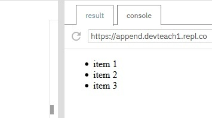
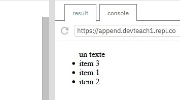
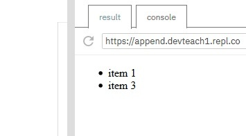

Nous savons dorénavant parcourir le DOM et sélectionner des éléments. Il peut être intéressant de connaître les méthodes qui vont nous permettre de le modifier. Concrètement, nous pourrions réaliser une page web entièrement en JavaScript grâce à l'API DOM, mais nous verrons qu'il est préférable de se concentrer sur des choses utiles afin d'éviter des lenteurs à notre application.
Cette méthode nous permet de créer l'élément HTML spécifié en paramètre.
Elle n'ajoute pas l'élément dans le DOM : nous l'utiliserons avec l'une des méthodes que nous verrons ci-dessous.
See the Pen Untitled by OpenSpirit (@OpenSpirit) on CodePen.
Nous avons créé ici un troisième élément li prêt à être ajouté à notre page web.
Cette méthode nous permet d'ajouter des nœuds après le dernier enfant de l'élément sur lequel elle est invoquée. Nous l'utiliserons pour ajouter des éléments à notre page après d'autres éléments.
See the Pen Untitled by OpenSpirit (@OpenSpirit) on CodePen.
La méthode append() permet d'ajouter des éléments HTML, mais également directement du texte. Ainsi, nous aurions pu remplacer li.innerText = 'item3' par li.append('item 3').
Il existe une méthode appendChild() permettant également d'ajouter après un autre élément de la page. Contrairement à append(), elle ne permet pas d'ajouter directement du texte et ne permet pas l'ajout de plusieurs éléments.
Cette méthode nous permet d'ajouter des nœuds avant le premier enfant de l'élément sur lequel elle est invoquée. Nous l'utiliserons pour ajouter des éléments à notre page avant d'autres éléments.
See the Pen Untitled by OpenSpirit (@OpenSpirit) on CodePen.
À l'instar de append(), nous pouvons ajouter des éléments HTML et du texte à notre page web.
Cette méthode nous permet tout simplement de supprimer un nœud du DOM.
See the Pen Untitled by OpenSpirit (@OpenSpirit) on CodePen.
Nous avons supprimé l'élément portant l'ID #item2 de la liste.
Nous pourrions avoir envie de ne pas supprimer définitivement un élément du DOM : soit pour le remettre ensuite, soit pour le déplacer. La méthode removeChild('child') pourra alors nous être utile. Elle va supprimer le nœud enfant spécifié et nous le retourner. Nous pourrons donc le stocker pour l'utiliser de nouveau plus tard.
En termes de performance, la modification du DOM peut être coûteuse. Elle impose un parcours en profondeur et le déplacement d'objets par rapport à d'autres, ce qui peut être lourd en fonction de la taille de notre application. D'une manière générale, il faut éviter :
Après avoir sélectionné un élément dans le DOM, nous pouvons le modifier en utilisant plusieurs méthodes de l'API DOM :